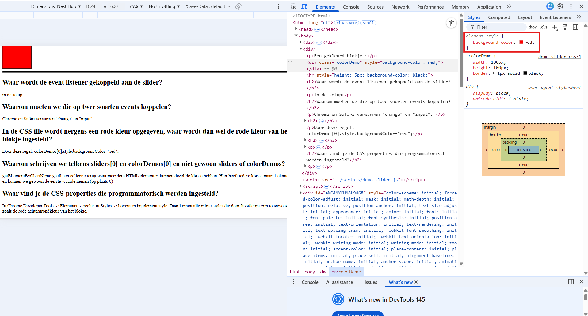

Open het console venster, versleep daarna de slider hieronder en kijk welke berichten er komen
Een gekleurd blokje :
in de setup
Chrome en Safari verwarren "change" en "input".
Door deze regel: colorDemos[0].style.backgroundColor="red";
getELementByClassName geeft een collectie terug want meerdere HTML elementen kunnen dezelfde klasse hebben. Hier heeft iedere klasse maar 1 element en kunnen we gewoon de eerste waarde nemen (op plaats 0)
In Chrome Developer Tools -> Elements -> rechts in Styles-paneel -> Styles -> bovenaan bij element.style. Daar komen alle inline styles die door JavaScript zijn toegevoegd, zoals de rode achtergrondkleur van het blokje.
